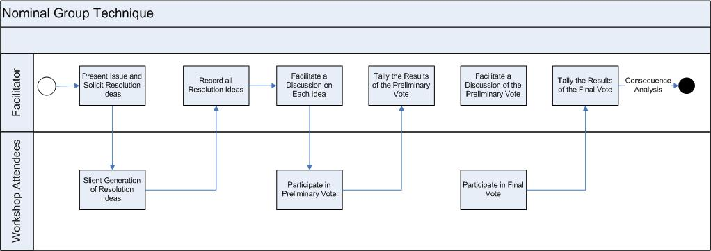

OUM |
Technique Overview |
||
Method Navigation |
Current Page Navigation |
||
|
|
||||||||
The purpose of this overview is to describe the Nominal Group technique and how it can be employed to support group-based consensus building and decision making.
The Nominal Group technique (NGT) is a decision making method used by groups of any size, who want to make decisions rapidly, by a vote, but want everyone's opinions taken into account. NGT uses a tallying approach that differentiates it from a more traditional “voting” system. An issue is presented by the facilitator, and then the group is asked to silently generate issue resolutions ideas. These ideas are summarized and consolidated. The group then ranks each resolution and the facilitator tallies the scores and announces the “winning” idea.
Within the context of a software implementation, this technique can be applied to great effect in situations where several options exist, and where the working group needs to collectively choose an option.
Proposed Resolution - The Proposed Resolution is the option with which to move forward that was collectively decided on by the group. Examples of Proposed Resolutions are:
The Proposed Resolution would typically be recorded in the MoSCoW List.
No. |
Step | Component | Component Description |
|---|---|---|---|
1 |
Present issue and Solicit Resolution Ideas | Issue Presentation | The Issue Presentation is a summary of the issue that is being discussed for resolution. |
| 2 | Record the ideas. | Resolution Ideas | The Resolution Ideas are the individual resolutions proposed for the issue by each member of the group. The Resolution Ideas are recorded so the entire group can see each idea. |
3 |
Facilitate a discussion on each idea. | ||
4 |
Conduct a preliminary vote. | Ballot Sheet | |
| 5 | Tally the results of the preliminary vote. | Preliminary Vote Results | |
| 6 | Discuss the preliminary vote results. | ||
| 7 | Conduct a final vote if the preliminary vote is inconclusive. | Ballot Sheet | |
| 8 | Tall Final Results. | Final Vote Results | |
| 9 | Conduct Consequence Analysis. | Consequence Analysis |

The facilitator presents the issue to the group and clarifies any questions. The facilitator then summarizes the issue, and either writes it on a flip chart/whiteboard, or passes out a worksheet to the group.
The facilitator directs each group member to silently and independently write resolution ideas in brief phrases or statements for the next five minutes.
The facilitator goes around the room and asks for one idea from one member at a time. The ideas are recorded on a flip chart or whiteboard visible to the entire group. This process continues until all ideas have been recorded.
The facilitator reads each idea for the issue in order and allows a short discussion of each idea. The group is asked if there are any questions or statements of clarification, agreement or disagreement.
The facilitator hands out five 3x5 cards to each group member.
The facilitator creates a ballot sheet on a flip chart, numbering the left-hand side in accordance with the number of items from the round robin listing. The facilitator then gathers all cards and shuffles them to preserve anonymity. One member is asked to read the item number and the rank number from each card while the facilitator records the rank order scores on each idea.
Discuss each resolution idea in order of ranking and provide each member a final opportunity to clarify the idea.
If the preliminary vote in inconclusive, conduct a final vote. Once again, the facilitator hands out five 3x5 cards to each group member.
Once again, the facilitator creates a ballot sheet on a flip chart, numbering the left-hand side in accordance with the number of items from the round-robin listing. Gather all cards and shuffle them to preserve anonymity. One member is asked to read the item number and the rank number from each card while the facilitator records the final rank order scores on each idea.
Once the group has voted and a Proposed Resolution has been provided, the facilitator conducts an adverse consequence analysis for any idea that represents a change to standard software configuration standards. The facilitator should review the suggested resolution and identify if there are obvious and fundamental problems with the solution. It is not intended to be an in depth review, but rather, a high-level review for obvious implications or issues.
The Proposed Resolution is noted and placed on the MoSCoW List.
There are no templates available to assist with this technique.
This technique is recommended for use in the following OUM tasks:
| Task | Usage |
|---|---|
| Use this technique to drive a group decision where several options or choices exist, but only one, or a subset, of the options can be used. | |
| Use this technique to drive a group decision where several options or choices exist, but only one, or a subset, of the options can be used. | |
| MC.055 Document Application Configuration Changes | Use this technique to help drive group consensus and decision making. |
Use the following criteria to check the quality of this technique:

Copyright © 2006, 2016, Oracle and/or its affiliates. All rights reserved.